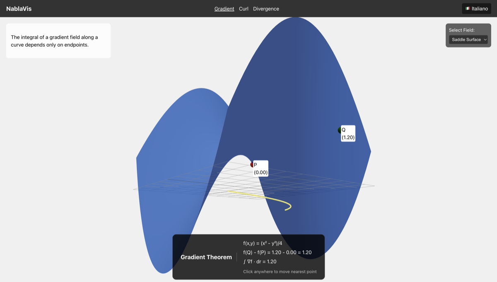
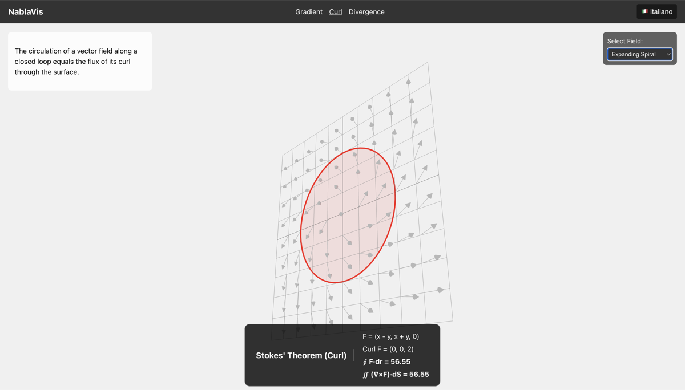
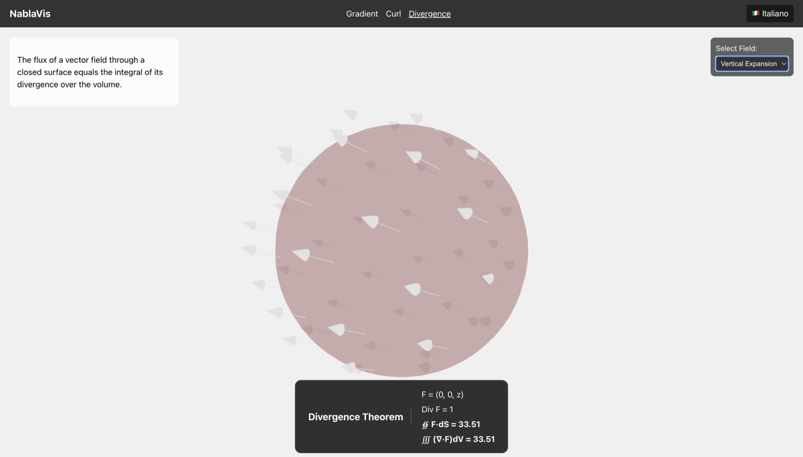

NablaVis: an interactive educational tool to visualize three applications of Stokes' Theorem
This post introduces NablaVis, an interactive web-based educational application designed to help students visualize and understand fundamental theorems of vector calculus through interactive 3D scenes. The tool allows users to explore scalar and vector fields, manipulate paths and surfaces, and observe real-time numerical verification of the mathematical relationships.
NablaVis covers three fundamental applications that are all unified under the general framework of Stokes' Theorem:
- Gradient Theorem - relating a line integral of a gradient field to the difference in scalar field values at endpoints
- Curl Theorem - relating a line integral around a closed curve to a surface integral of the curl over the enclosed surface
- Divergence Theorem - relating the flux of a vector field through a closed surface to the divergence over the enclosed volume
The application is deployed and freely accessible at: https://computationalmindset.com/apps/NablaVis
Educational Philosophy
Vector calculus concepts like gradient, curl, and divergence are often difficult for students to grasp through traditional textbook presentations alone. NablaVis bridges this gap by making these abstract mathematical concepts tangible and interactive. Instead of passive learning, students can manipulate mathematical objects in real-time and immediately observe how changes affect the theorem verification.
The tool emphasizes hands-on exploration: users can drag endpoints of paths, adjust surfaces, change vector fields, and watch as the application instantly computes and compares both sides of each theorem's equation. This immediate visual and numerical feedback helps build intuition about what these theorems really mean and why they work.
The Gradient Theorem
The Gradient Theorem states that for a scalar field $f$ and a path from point $P$ to point $Q$: $$\int_C \nabla f \cdot \mathrm{d}\mathbf{r} = f(Q) - f(P)$$
In NablaVis, this theorem is visualized through:
- 3D scalar field representation: A height map where the z-coordinate represents the scalar field value $f(x,y)$
- Interactive path: A curve connecting points P and Q that can be modified by clicking on the terrain to reposition endpoints
- Real-time verification: The HUD displays both $f(Q) - f(P)$ and the computed line integral $\int_C \nabla f \cdot \mathrm{d}\mathbf{r}$, confirming they are equal regardless of the path taken
Four preset scalar fields are available for exploration:
- Paraboloid: $f(x,y) = x^2 + y^2$ - a simple convex surface
- Saddle Surface: $f(x,y) = x^2 - y^2$ - demonstrating a hyperbolic paraboloid
- Gaussian Peak: $f(x,y) = e^-(x^2 + y^2)$ - a smooth bell-shaped surface
- Hill & Valley: A more complex terrain with multiple critical points
The visualization clearly demonstrates a key property of gradient fields: they are conservative, meaning the line integral depends only on the endpoints, not on the path taken between them.

Figure: NablaVis visualization of the Gradient Theorem with a 3D scalar field.
The path connects points P and Q, and the HUD verifies that $\int_C \nabla f \cdot \mathrm{d}\mathbf{r} = f(Q) - f(P)$.
The path connects points P and Q, and the HUD verifies that $\int_C \nabla f \cdot \mathrm{d}\mathbf{r} = f(Q) - f(P)$.
The Curl Theorem
The Curl Theorem relates the circulation of a vector field around a closed curve to the flux of its curl through the enclosed surface: $$\oint_C \mathbf{F} \cdot \mathrm{d}\mathbf{r} = \iint_S (\nabla \times \mathbf{F}) \cdot \mathrm{d}\mathbf{S}$$
The visualization features:
- 2D vector field: Arrows on the xy-plane showing the vector field $\mathbf{F}(x,y)$
- Circular path: A closed curve $C$ bounding a surface $S$
- Mathematical verification: Real-time comparison of the circulation $\oint_C \mathbf{F} \cdot \mathrm{d}\mathbf{r}$ (left side) with the surface integral $\iint_S (\nabla \times \mathbf{F}) \cdot \mathrm{d}\mathbf{S}$ (right side)
Four preset vector fields illustrate different behaviors:
- Simple Rotation: $\mathbf{F} = (-y, x)$ - uniform rotation around the origin
- Shear Flow: $\mathbf{F} = (y, 0)$ - horizontal shearing motion
- Expanding Spiral: Combining rotation and radial expansion
- Saddle Field: A field with more complex curl distribution
This visualization helps students understand that curl measures the "rotational tendency" of a vector field, and the Curl Theorem relates the microscopic rotation (curl at each point) to the macroscopic circulation around a boundary.

Figure: NablaVis visualization of the Curl Theorem with a 2D vector field.
The circular path bounds a surface, and the HUD verifies that $\oint_C \mathbf{F} \cdot \mathrm{d}\mathbf{r} = \iint_S (\nabla \times \mathbf{F}) \cdot \mathrm{d}\mathbf{S}$.
The circular path bounds a surface, and the HUD verifies that $\oint_C \mathbf{F} \cdot \mathrm{d}\mathbf{r} = \iint_S (\nabla \times \mathbf{F}) \cdot \mathrm{d}\mathbf{S}$.
The Divergence Theorem
The Divergence Theorem relates the flux of a vector field through a closed surface to the divergence throughout the enclosed volume: $$\iint_S \mathbf{F} \cdot \mathrm{d}\mathbf{S} = \iiint_V (\nabla \cdot \mathbf{F}) \, \mathrm{d}V$$
The 3D visualization includes:
- 3D vector field: Arrows in three-dimensional space showing $\mathbf{F}(x,y,z)$
- Spherical surface: A closed surface $S$ enclosing a volume $V$
- Real-time verification: Comparison of the total flux $\iint_S \mathbf{F} \cdot \mathrm{d}\mathbf{S}$ through the surface with the volume integral $\iiint_V (\nabla \cdot \mathbf{F}) \, \mathrm{d}V$
Four preset fields demonstrate different divergence behaviors:
- Source (Point Charge): $\mathbf{F} = (x, y, z)$ - radial outward flow, positive divergence
- Sink: $\mathbf{F} = (-x, -y, -z)$ - radial inward flow, negative divergence
- Uniform Field: $\mathbf{F} = (1, 0, 0)$ - constant field with zero divergence
- Vertical Expansion: $\mathbf{F} = (0, 0, z)$ - expansion in one direction only
The visualization clearly shows that divergence measures the "source strength" or "sink strength" at each point - whether the field is expanding outward (positive divergence) or contracting inward (negative divergence).

Figure: NablaVis visualization of the Divergence Theorem with a 3D vector field.
The spherical surface encloses a volume, and the HUD verifies that $\iint_S \mathbf{F} \cdot \mathrm{d}\mathbf{S} = \iiint_V (\nabla \cdot \mathbf{F}) \, \mathrm{d}V$.
The spherical surface encloses a volume, and the HUD verifies that $\iint_S \mathbf{F} \cdot \mathrm{d}\mathbf{S} = \iiint_V (\nabla \cdot \mathbf{F}) \, \mathrm{d}V$.
User Interface and Interaction
NablaVis provides an intuitive interface with several key features:
- Real-time HUD (Heads-Up Display): Shows the mathematical formulas, computed values for both sides of each equation, and confirmation when the theorem is verified (values match within numerical tolerance)
- Preset selections: Quick access to predefined scalar fields and vector fields that demonstrate interesting mathematical properties
- 3D camera controls: Rotate, pan, and zoom to view scenes from any angle
- Multilingual support: Interface available in English and Italian
- Responsive design: Works on desktop computers, tablets, and mobile devices
- Interactive manipulation:
- For the Gradient Theorem: Click on terrain to move path endpoints
- For Curl and Divergence Theorems: Observe how different preset fields behave
Technical Implementation
NablaVis is built using modern web technologies that enable high-performance 3D graphics in the browser:
- React 18: Component-based UI framework for building the application structure
- TypeScript: Adds type safety and improves code maintainability
- Three.js: Industry-standard 3D graphics library powered by WebGL
- @react-three/fiber: React renderer for Three.js, enabling declarative 3D scene construction
- @react-three/drei: Useful helpers and abstractions for common 3D patterns
- Vite: Modern build tool providing fast development and optimized production builds
- React Router (HashRouter): Client-side routing that works in any hosting environment, including subfolders
The numerical integration algorithms compute line integrals, surface integrals, and volume integrals using appropriate discretization methods. The verification displays update in real-time as users interact with the scenes, providing immediate feedback.
Educational Applications
NablaVis can be used in various educational contexts:
- Classroom demonstrations: Instructors can use the tool during lectures to illustrate vector calculus concepts with live, interactive examples
- Student exploration: Students can experiment with different fields and paths to build intuition about the theorems
- Homework verification: Visual and numerical confirmation helps students check their understanding of problems
- Self-study: The interactive nature makes it suitable for independent learning outside the classroom
Try NablaVis
Experience NablaVis directly in your browser:
Launch NablaVis
The application requires no installation and works on any modern web browser with WebGL support.
For the best experience, use a recent version of Chrome, Firefox, Safari, or Edge.
Development and Contribution
NablaVis was developed using AI assistance (Gemini with Antigravity) as part of an exploration in AI-assisted software development for educational tools.
The project follows standard modern TypeScript and JavaScript development practices:
Clone the repository:
git clone https://github.com/ettoremessina/NablaVis.git
cd NablaVisInstall dependencies:
npm installRun development server:
npm run devBuild for production:
npm run builddist/ folder and can be deployed to any static hosting service.
Source Code and License
The complete source code is available on GitHub at this address: NablaVis.
These materials are distributed under MIT license; feel free to use, share, fork and adapt these materials as you see fit.
Also please feel free to submit pull-requests and bug-reports to this GitHub repository or contact me on my social media channels available on the top right corner of this page.